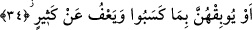
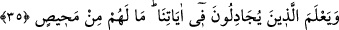

gereken işlerin tamamından kinâye de olabilir. Îmânın hasletlerinde ve faydalı
sonuçlarında kâmil olan her mümin için mânâ, sabır ve şükre bağlanır. Zîrâ îmânın
yarısı mâsiyetlere karşı sabırdır. Diğer yarısı ise şükürdür ki bu da yapılması gereken
vazifeleri yerine getirmekten ibarettir.
34. Yahut yaptıkları yüzünden onları helâk eder. Birçoğunu da affeder (kurtarır).
“Yahut yaptıkları yüzünden onları” gemilerin içindekilerin bir kısmını batırıp
“helâk eder. Birçoğunu da affeder” mallarını da zâyi etmez, (kurtarır).”
“
/evbekahu” onu helâk etti demektir. Kâmus’ta ve Tâcü’l-masâdir’de de böyledir.
Mânâ şöyledir: Allah dilerse rüzgârları durdurur. Bu takdirde gemiler de dururlar.
Yahut rüzgârı salıverir. Bu takdirde ise adâleti gereği gemileri batırıp yolcuları da
boğar. Esâsen yolcuların hâli olan bu helâk durumunu gemilere nisbet etmek, konunun
anlatılmasında daha mânidar ve daha müessirdir. Yani gemilerin helâkinden maksad,
helâki gerektiren günahları sebebiyle yolcuların helâk edilmesidir. Demek ki âyette
gemiler zikredilmiş ama gemilerdeki yolcular murâd edilmiştir.
Müftî Sa’dî der ki: Bu âyeti mecazdan vazgeçip hakîkat üzere bırakmakta bir mâni
yoktur. Bu âyet aynen “başınıza gelen her hangi bir musîbet kendi ellerinizin yaptığı
işler yüzündendir. Allah hatâlarınızın bir çoğunu da affeder.” (eş-Şûrâ 42/30) kavli
gibidir. Yani kazandıkları günahların uğursuzluğundan dolayı Allah gemilerini batırıp
onları helak eder, demektir.
“Birçoğunu da affeder” sözündeki hükmü af üzerinde icrâ etmek şunun içindir: Allah
rüzgârı ya durdurur yahut salıverir de bu fırtınada bazılarını helâk eder, diğer bazılarını
da af yoluyla kurtarır.
35. Böylece âyetlerimiz üzerinde tartışanlar, kendilerine kaçacak bir yer
olmadığını bilsinler.
“Böylece âyetlerimiz üzerinde” onu bertaraf edip boşa çıkarmak için “tartışanlar,
kendilerine” azaptan “kaçacak bir yer olmadığını bilsinler.”
Bu âyet onlardan intikam alınması gibi gizli bir illete mâtuftur. Yani “Allah onlardan
intikam alsın; Kur’an’ı yalanlayıp onu iptal ederek bertaraf etmeye çalışanlar da
bilsinler…” demektir.
Farklı kırâat mülahazalarıyla âyetten şu mânâ da anlaşılabilir: Şâyet Allah dilerse bir